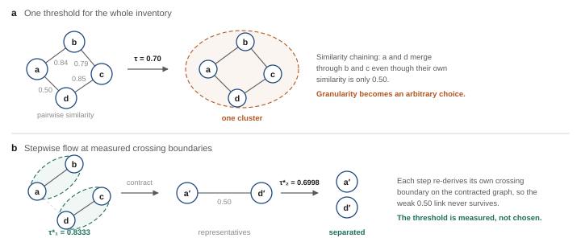
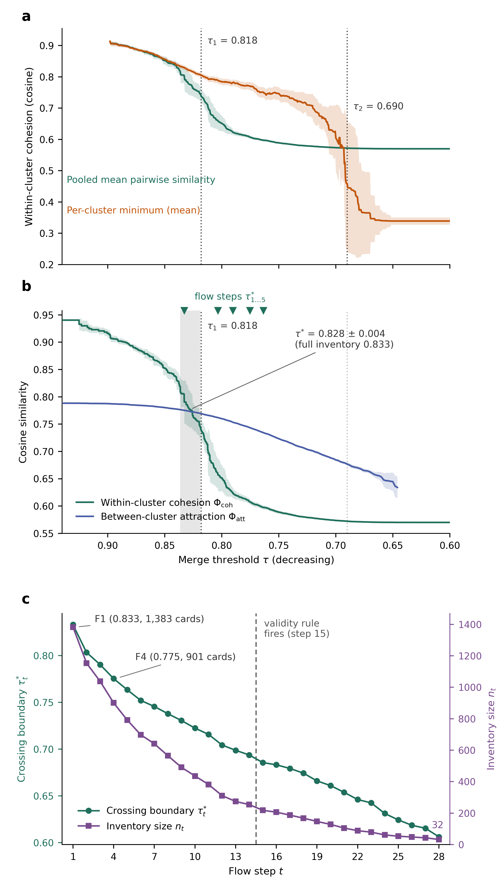
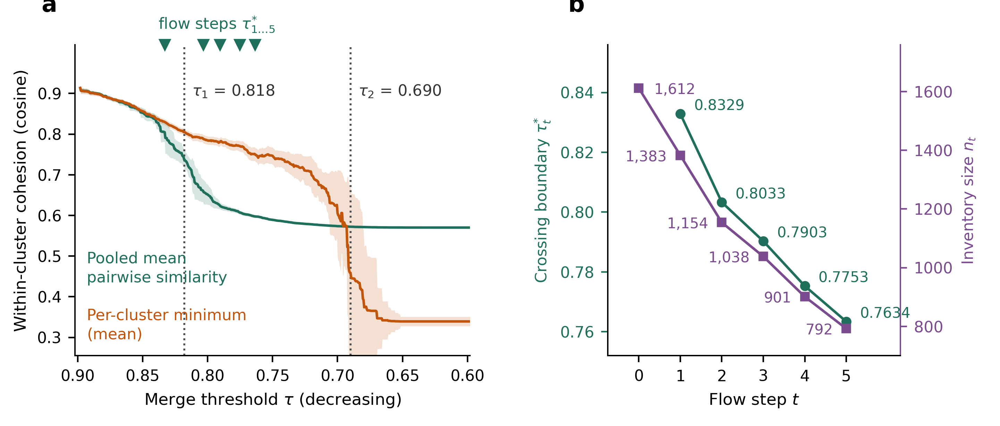
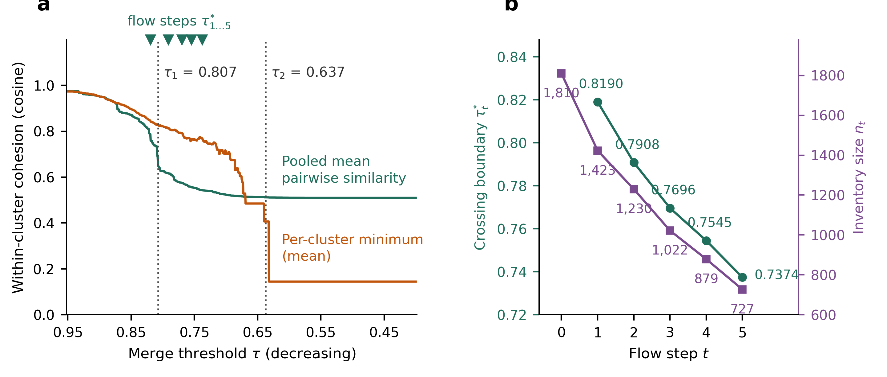

Highest-similarity pairs in the source inventories
This is the problem the rest of the page answers. Both inventories carry pairs that are almost
the same risk written twice, and the ten closest pairs by cosine similarity, before any consolidation, show what
that near-duplication looks like. The question is not whether to merge such pairs, but how far down the
similarity scale merging stays defensible.
Our Master inventory (1,612 cards)
| # | cos | Card A | Card B |
|---|---|---|---|
| 1 | 0.9404 | RAI4-0506 Ownership uncertainty for AI-generated content | RAI4-1368 Uncertain IP status of AI-generated content |
| 2 | 0.9252 | RAI4-0551 Objective misalignment with human intent | RAI4-0591 Misalignment with human values |
| 3 | 0.9231 | RAI4-1608 Reputational damage from use or misuse of AI systems | RAI4-1726 Reputational harm attributable to AI systems |
| 4 | 0.9178 | RAI4-0523 Lack of system transparency | RAI4-0596 Lack of model transparency |
| 5 | 0.9164 | RAI4-0228 Explicit hazard non-rejection | RAI4-0229 Implicit hazard non-rejection |
| 6 | 0.9142 | RAI4-0682 Generation of content enabling nonviolent crimes | RAI4-0691 Generation of content enabling violent crimes |
| 7 | 0.9079 | RAI4-1055 Compromising privacy by leaking sensitive information | RAI4-1072 Compromising privacy by leaking private information |
| 8 | 0.9031 | RAI4-0554 Active loss of control | RAI4-0856 Loss of control risks |
| 9 | 0.9007 | RAI4-1732 Disinformation spread via generative AI | RAI4-1733 Generative AI-driven disinformation spread |
| 10 | 0.8994 | RAI4-0863 AI-generated advice influencing user moral judgment | RAI4-0870 Financial market instability from GPAI agents |
MIT AI Risk Repository (1,795 entries)
| # | cos | Entry A | Entry B |
|---|---|---|---|
| 1 | 1.0000 | Weidinger2023 Erosion of trust in public information | Li2025 Erosion of trust in public information |
| 2 | 1.0000 | Weidinger2023 Unfair capability distribution | Li2025 Unfair capability distribution |
| 3 | 1.0000 | Vidgen2024 Self-harm | Gipiškis2024 Self-harm |
| 4 | 0.9994 | Weidinger2023 Propagating misconceptions/ false beliefs | Li2025 Propagating misconceptions / false beliefs |
| 5 | 0.9963 | Weidinger2023 Toxic content | Li2025 Toxic content |
| 6 | 0.9954 | Gipiškis2024 Reinforcement learning AI (Training design related) | Gipiškis2024 Reinforcement learning AI (Training performance related) |
| 7 | 0.9951 | Gipiškis2024 Supervised/unsupervised AI (AI training performance related - Accuracy) | Gipiškis2024 Supervised/unsupervised AI (AI training performance related - Reliability) |
| 8 | 0.9919 | Gipiškis2024 Supervised/unsupervised AI (AI training performance related - Robustness) | Gipiškis2024 Supervised/unsupervised AI (AI training performance related - Reliability) |
| 9 | 0.9919 | Gipiškis2024 Intentional | Gipiškis2024 Unintentional |
| 10 | 0.9904 | Gipiškis2024 Supervised/unsupervised AI (AI training performance related - Robustness) | Gipiškis2024 Supervised/unsupervised AI (AI training performance related - Accuracy) |
Entry labels prefixed by their source citation. Placeholder rows without a category label are
excluded. 4 of the ten pairs are verbatim duplicates carried in from different source
papers, which is the kind of redundancy the crossing boundary removes first; our inventory has no exact
duplicates, so its closest pairs are paraphrases rather than repeats.
Why the threshold cannot be chosen
Connected components take the transitive closure of the edge relation, so one bridging pair is
enough to place two dissimilar cards in the same cluster. The remedy is not a better constant but a boundary
re-derived after every consolidation.

How the boundary is measured
The figure below is the flagship figure of the accompanying manuscript. It carries the whole
argument in three panels: where the space breaks, where the last defensible merge boundary sits, and how that
boundary moves once merging begins.

Concepts1
Threshold graph. Cards are vertices; two cards are joined when the cosine similarity of their embeddings
is at least τ. Connected components are the merge clusters, which makes the construction identical to
single-linkage clustering read at one cut.
Cohesion Φcoh(τ). The pooled mean pairwise similarity inside clusters. It answers: how alike are the cards we have decided to treat as one?
Attraction Φatt(τ). The mean over clusters of the single highest similarity to any card outside the cluster. It answers: how strongly does the nearest outsider pull? Being an extreme-value statistic, it is the demanding half of the comparison.
Crossing τ*. The smallest τ at which cohesion still dominates attraction. Below it, the typical card inside a cluster is less like its own cluster than the cluster is like its nearest neighbour, so the partition has stopped describing the data.
Granularity flow. Merging at τ* changes the density of the space, so the boundary moves. Iterating merge, re-derive, merge again yields a trajectory of boundaries and inventories; a tier is one state along that trajectory rather than a separately designed release.
Cohesion Φcoh(τ). The pooled mean pairwise similarity inside clusters. It answers: how alike are the cards we have decided to treat as one?
Attraction Φatt(τ). The mean over clusters of the single highest similarity to any card outside the cluster. It answers: how strongly does the nearest outsider pull? Being an extreme-value statistic, it is the demanding half of the comparison.
Crossing τ*. The smallest τ at which cohesion still dominates attraction. Below it, the typical card inside a cluster is less like its own cluster than the cluster is like its nearest neighbour, so the partition has stopped describing the data.
Granularity flow. Merging at τ* changes the density of the space, so the boundary moves. Iterating merge, re-derive, merge again yields a trajectory of boundaries and inventories; a tier is one state along that trajectory rather than a separately designed release.
Measures2
τ1, chaining onset. The largest drop of Φcoh over a 0.01 window on a
10−4 grid. Below it, clusters grow by transitive chains rather than by mutual similarity.
τ2, worst-case collapse. The same changepoint statistic applied to the per-cluster minimum. Below it, the worst pair inside a cluster is no longer a merge in any defensible sense.
Uncertainty. Every curve is the mean of 1,000 subsample replicates at 80% of cards, with bands at two standard deviations; the changepoints carry the spread of those replicates.
Per-step null. Each merge group is compared with size-matched random groups drawn on the same inventory, scored as z = (observed minimum − null mean) / null s.d.
Validity rule. A step is admissible when at least 90% of its merge groups exceed the null by two standard deviations. The rule delimits the admissible range by itself, without an externally chosen stopping point.
τ2, worst-case collapse. The same changepoint statistic applied to the per-cluster minimum. Below it, the worst pair inside a cluster is no longer a merge in any defensible sense.
Uncertainty. Every curve is the mean of 1,000 subsample replicates at 80% of cards, with bands at two standard deviations; the changepoints carry the spread of those replicates.
Per-step null. Each merge group is compared with size-matched random groups drawn on the same inventory, scored as z = (observed minimum − null mean) / null s.d.
Validity rule. A step is admissible when at least 90% of its merge groups exceed the null by two standard deviations. The rule delimits the admissible range by itself, without an externally chosen stopping point.
Results3
a, Two transitions bound the usable range: τ1 = 0.818 ± 0.010 and
τ2 = 0.690 ± 0.009. Between them lies a fidelity-oriented regime; below τ2
a giant cluster has absorbed the inventory.
b, The crossing is at τ* = 0.828 ± 0.004 across subsamples and 0.833 on the full inventory. It agrees with τ1 although the two are measured from unrelated statistics, which is what makes the boundary credible rather than merely convenient.
c, The flow runs 28 consolidations, carrying 1,612 cards to 32 and the boundary from 0.833 to 0.606. The validity rule first fails at step 15, so steps 1 to 14 are the admissible range; F1 to F5 are the first five of them. Merging in one pass at a low threshold instead of stepwise does not reach the same place: a single cut at τ = 0.7753 leaves 632 clusters with a giant cluster of 868 cards, against 901 well-formed cards with a largest group of 56 along the flow.
b, The crossing is at τ* = 0.828 ± 0.004 across subsamples and 0.833 on the full inventory. It agrees with τ1 although the two are measured from unrelated statistics, which is what makes the boundary credible rather than merely convenient.
c, The flow runs 28 consolidations, carrying 1,612 cards to 32 and the boundary from 0.833 to 0.606. The validity rule first fails at step 15, so steps 1 to 14 are the admissible range; F1 to F5 are the first five of them. Merging in one pass at a low threshold instead of stepwise does not reach the same place: a single cut at τ = 0.7753 leaves 632 clusters with a giant cluster of 868 cards, against 901 well-formed cards with a largest group of 56 along the flow.
1 Definitions are stated in full in the Methods section of the manuscript.
2 Grids, windows, replicate counts and null specifications are fixed before analysis and reported with
the code in
analysis/.
3 Values quoted here are the released figures; the manuscript reports them with full derivations and
the accompanying null tests.
How consolidation runs
The procedure in full, written as an algorithm. Everything turns on one quantity, the
gap Δ(τ) = Φcoh(τ) − Φatt(τ): how much more a
cluster resembles itself than it resembles the nearest card outside it. Merging is defensible while the gap is
positive. Two percolation thresholds, measured independently of the gap, bound the region where the question is
even meaningful.
Algorithm 1 Granularity flow by the cohesion–attraction gap
Input card set V, unit embeddings e, grid δ = 10−4, null level (90%, 2σ)
Output tier sequence F1, F2, …
Output tier sequence F1, F2, …
1 function Gap(S, τ)
2 C ← connected components of G(τ) = (S, {(i,j) : cos(e_i, e_j) ≥ τ})
3 Φ_coh ← mean of cos(e_i, e_j) over all pairs inside the same component
4 Φ_att ← mean over components of max cos(e_i, e_j), j outside the component
5 return Φ_coh − Φ_att ▷ the gap Δ(τ)
6 function PercolationThresholds(S)
7 τ₁ ← τ of the steepest fall of Φ_coh over a 0.01 window ▷ chaining onset
8 τ₂ ← τ of the steepest fall of the per-cluster minimum ▷ giant cluster forms
9 return (τ₁, τ₂) ▷ 0.818, 0.690 on the Master set
10 S₀ ← V ; t ← 0
11 (τ₁, τ₂) ← PercolationThresholds(S₀) ▷ above τ₁: isolated pairs
▷ below τ₂: one blob, no partition left
12 repeat
13 t ← t + 1
14 τ*_t ← min { τ on the δ grid : Gap(S_{t−1}, τ) ≥ 0 } ▷ last τ with a positive gap
15 assert τ*_t ≥ τ₁(S_{t−1}) > τ₂(S_{t−1}) ▷ the boundary sits above chaining
16 M ← { components of G(τ*_t) with more than one member }
17 for each g ∈ M
18 z(g) ← (min-similarity(g) − μ_null(|g|)) / σ_null(|g|) ▷ size-matched random groups
19 if |{ g ∈ M : z(g) > 2 }| / |M| < 0.90 then break ▷ validity rule; first fails at t = 15
20 S_t ← { medoid(c) : c component of G(τ*_t) } ▷ representatives are original cards
21 emit F_t ← S_t
22 until S_t = S_{t−1}
23 return F₁ … F₁₄ ▷ released for audit: F₁ … F₅
Why the gap and not a fixed threshold. Line 14 does not ask whether similarity is high in absolute
terms; it asks whether the inside still beats the outside. That comparison is scale free, which is why the same
line returns 0.8329 here and 0.8190 on the MIT repository without a parameter being touched.
Why percolation matters. Lines 7 and 8 locate the two thresholds at which the connectivity of the graph changes character: above τ₁ components grow by mutual similarity, between τ₁ and τ₂ they grow by transitive chains, and below τ₂ a giant component has swallowed the inventory (97% of cards by τ ≈ 0.70). Line 15 records the finding that the gap boundary lands at or above the chaining onset, so the two criteria agree although they are measured from unrelated statistics.
Why iterate. Line 20 changes the inventory, and a sparser inventory has a different density, so τ* must be measured again in line 14. The empirical dependence is τ* ≈ 0.576 + 0.035 ln n, roughly +0.024 per doubling of the inventory.
Why it stops by itself. Line 19 is the only exit, and it is a test rather than a preference. It first fires at t = 15, which is what makes steps 1 to 14 an admissible range rather than an arbitrary cut-off.
Why percolation matters. Lines 7 and 8 locate the two thresholds at which the connectivity of the graph changes character: above τ₁ components grow by mutual similarity, between τ₁ and τ₂ they grow by transitive chains, and below τ₂ a giant component has swallowed the inventory (97% of cards by τ ≈ 0.70). Line 15 records the finding that the gap boundary lands at or above the chaining onset, so the two criteria agree although they are measured from unrelated statistics.
Why iterate. Line 20 changes the inventory, and a sparser inventory has a different density, so τ* must be measured again in line 14. The empirical dependence is τ* ≈ 0.576 + 0.035 ln n, roughly +0.024 per doubling of the inventory.
Why it stops by itself. Line 19 is the only exit, and it is a test rather than a preference. It first fires at t = 15, which is what makes steps 1 to 14 an admissible range rather than an arbitrary cut-off.
Granularity flow tiers

| Tier | τ* | Cards | Merge groups | Absorbed | G / A / P | Role |
|---|---|---|---|---|---|---|
| Master | – | 1,612 | – | – | 1,154 / 155 / 303 | canonical inventory |
| F1 | 0.8329 | 1,383 | 109 | 229 | 906 / 140 / 337 | fidelity tier (crossing) |
| F2 | 0.8033 | 1,154 | 121 | 458 | 734 / 128 / 292 | second consolidation |
| F3 | 0.7903 | 1,038 | 81 | 574 | 653 / 112 / 273 | third consolidation |
| F4 | 0.7753 | 901 | 82 | 711 | 568 / 92 / 241 | compression tier |
| F5 | 0.7634 | 792 | 70 | 820 | 491 / 83 / 218 | extended compression tier |
Merge groups are counted per consolidation step and absorbed cards cumulatively from the Master inventory. Highlighted rows are released for human audit; the F4 audit page reports 211 refined groups, the cumulative count over steps 1–4. The Societal Safety axis is one concept family applied at three scopes, so its cards are counted under General, Agentic or Physical (RAI3-G|A|P-SOC-nn share the same numbering and meaning).
Cross-corpus replication · MIT AI Risk Repository
The same pipeline applied to an independent inventory, with no parameter retuned.
Entries are the repository's risk categories and subcategories, embedded with the same encoder.

| Tier | τ* | Entries | Merge groups | Absorbed | Median z | Role |
|---|---|---|---|---|---|---|
| Source | – | 1,810 | – | – | – | MIT repository inventory |
| M1 | 0.8190 | 1,423 | 189 | 387 | 4.79 | fidelity tier (crossing) |
| M2 | 0.7908 | 1,230 | 104 | 580 | 3.68 | second consolidation |
| M3 | 0.7696 | 1,022 | 115 | 788 | 3.53 | third consolidation |
| M4 | 0.7545 | 879 | 87 | 931 | 3.17 | compression tier |
| M5 | 0.7374 | 727 | 99 | 1,083 | 3.00 | extended compression tier |
Merge groups and median z are per consolidation step; absorbed entries are cumulative.
Every step clears the validity rule, with at least 98.9% of merge groups exceeding the size-matched random-group
null by two standard deviations. The domain columns are omitted because the MIT repository uses its own top-level
scheme rather than the General / Agentic / Physical families. This replication is reported for reference only and
is not released for human audit.
F1 · τ* = 0.8329
1,383 cards · the crossing boundary of the original inventory · L3 re-assigned by the seed-anchored hybrid EM.
Open auditF4 · τ* = 0.7753
901 cards · four consolidations · consolidated labels and definitions rewritten for representativeness.
Open auditF5 · τ* = 0.7634
792 cards · five consolidations · L3 propagated from the F4 representatives.
Open auditKorean terminology reference
36 entries aligned with TTA, KISA, NIS, ETRI and the AI Framework Act — the basis for
the Korean wording of card labels and definitions.
Open glossaryHow to audit
Judge each card on three criteria — ① description adequacy (is the risk
correctly described?), ② L3 mapping (is the assigned L3 appropriate?), and
③ redundancy (does it duplicate other cards?). Record the verdict, add a note where useful,
and press Export judgments before closing; judgments are not saved automatically.